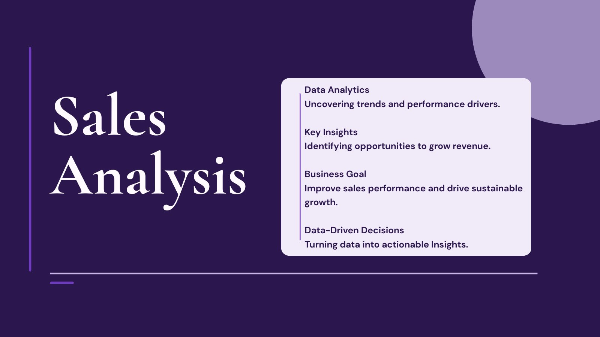
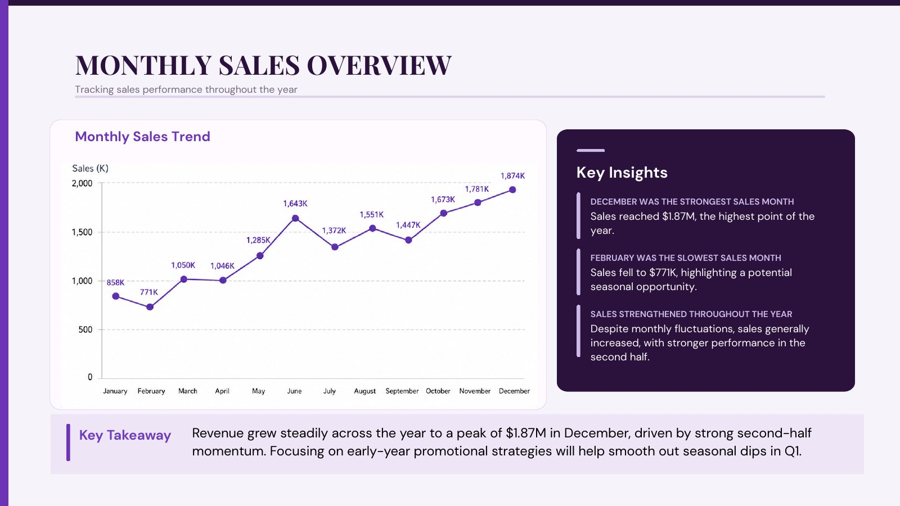
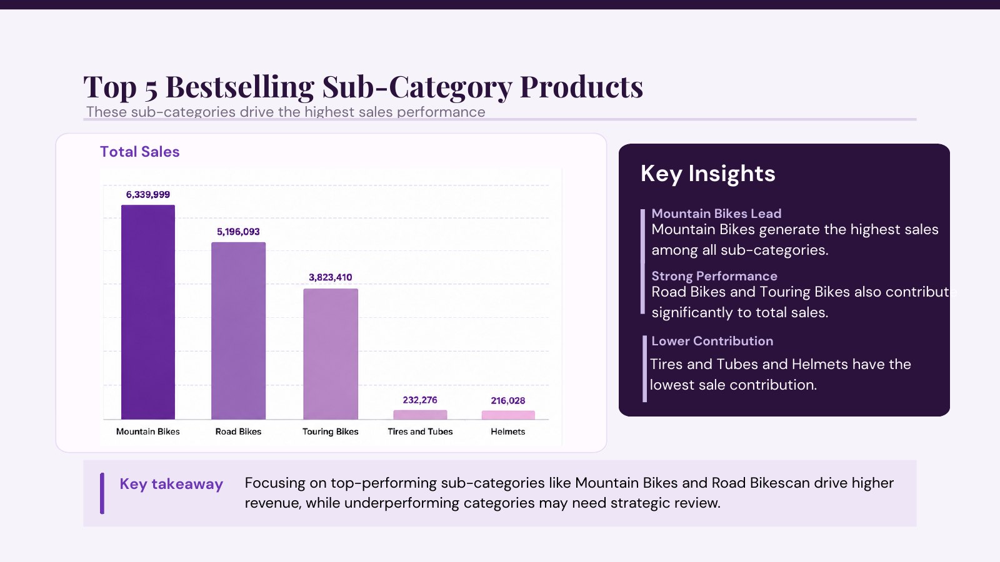
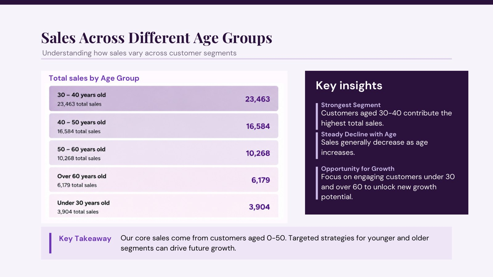
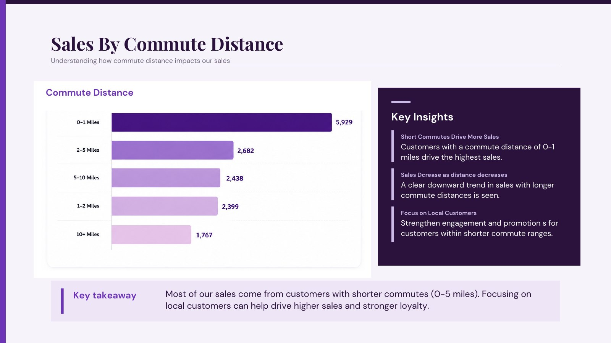
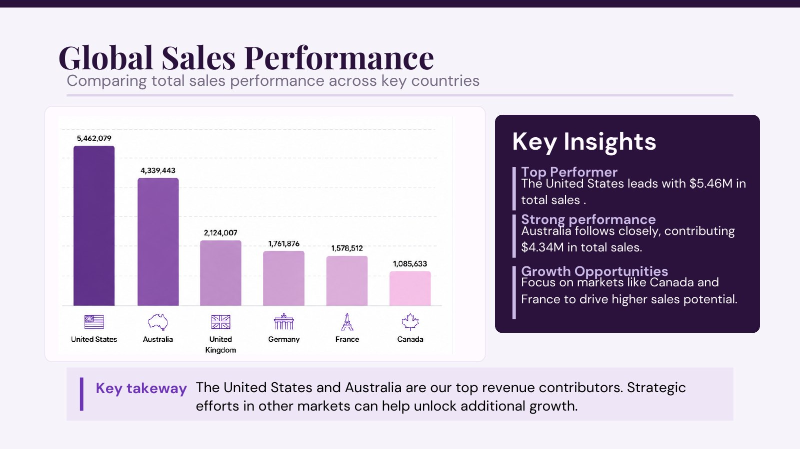
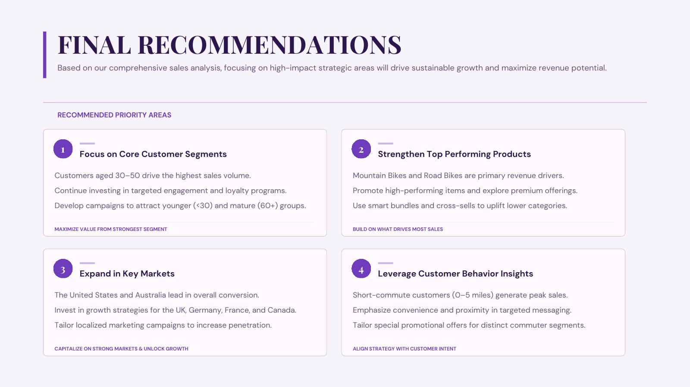

Focus core segments
Invest in loyalty and targeted engagement for high-value customers aged 30–50.
Sales performance analytics · 2025
Uncovering sales trends and performance drivers to identify opportunities for sustainable revenue growth.

SalesPro Co. needed a clear view of sales performance, customer purchasing behavior, and geographic opportunity.
The analysis connects monthly trends, product sub-categories, customer demographics, commute distance, and country-level performance to business-ready recommendations.
Built from SQL analysis and translated into dashboard-ready insight for decision makers.
02 · Monthly trend
Revenue climbed to its yearly peak in December, while early-year performance revealed a seasonal opportunity.
Sales in December, the strongest month
Sales in February, the slowest month
Stronger sales momentum in the second half

03 · Product performance
The highest-selling categories account for the largest share of revenue, while lower-contributing categories point to cross-sell and review opportunities.

04 · Customer insights
Customer behavior highlights where the current business is strongest—and which segments offer room for growth.

05 · Customer behavior
Local customers are the strongest opportunity for targeted engagement and proximity-focused messaging.

06 · Global performance
High-performing markets provide a strong base, while other countries remain clear targets for localized growth.
United States sales, the top market
Australia sales, the second-largest market
Markets to develop: UK, Germany, France, and Canada

07 · Strategic priorities
Invest in loyalty and targeted engagement for high-value customers aged 30–50.
Promote Mountain and Road Bikes, and use bundles to lift lower-performing categories.
Build on US and Australian performance while tailoring local campaigns for growth markets.
Emphasize convenience and proximity for high-value local customer groups.

Project resources
Explore the Tableau dashboard, review the SQL workflow, or see the original presentation deck.